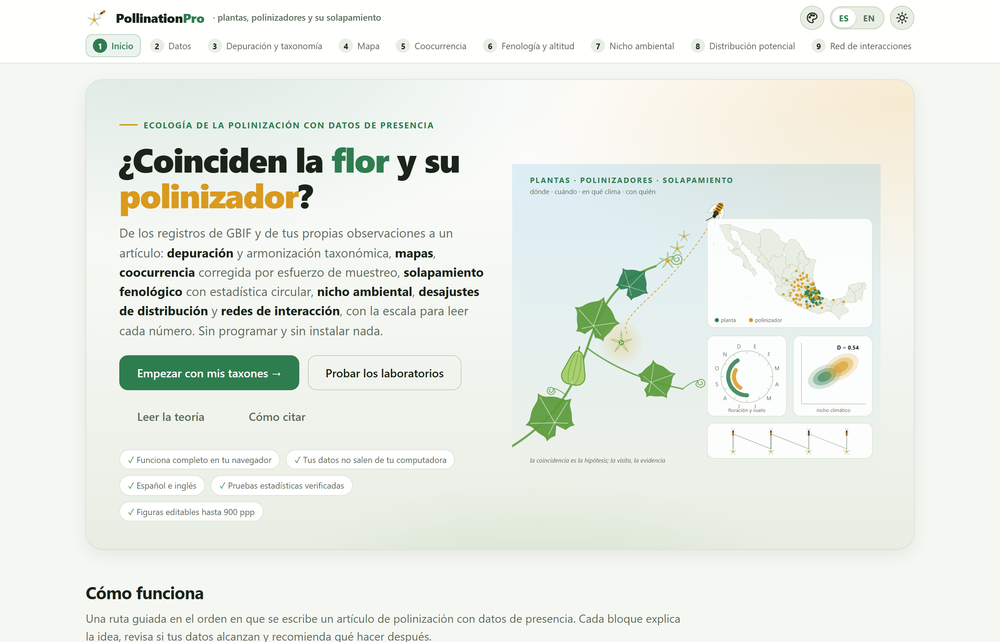

Es el DOI de concepto en Zenodo: lleva siempre a la versión más reciente. En línea: luisangelbg.github.io/PollinationPro.
PollinationPro funciona por completo dentro de tu navegador. Tus registros de presencia, tus observaciones de visitas y tus capas climáticas se leen en tu computadora y nunca se envían a ningún servidor. Solo cuando tú lo pides, el programa consulta dos servicios públicos —GBIF, para los nombres y los registros, y una base pública de interacciones bióticas— y lo que devuelven se queda en tu equipo. Todo lo demás funciona sin internet.
Las ilustraciones, los diagramas y las capturas de pantalla de este manual son originales: se generaron con el propio programa o con código escrito para el manual. Todos los resultados que se muestran salen del estudio de práctica que trae el programa —«Cucurbitáceas y abejas de la calabaza»— y de sus capas ambientales de práctica. Los dos son ficticios: los nombres de los taxones son reales para que el ejemplo se lea como un estudio, pero ningún punto, fecha, conteo de visitas ni valor climático reproduce una observación, y así lo dice la app cada vez que se cargan. No deben citarse ni usarse para concluir nada sobre esas especies.
El manual sigue el mismo orden que la app: diez bloques numerados que se recorren de izquierda a derecha en la barra de arriba. Cada capítulo explica un bloque y lleva su mismo número —el capítulo 5 es el Bloque 5, y sus secciones, figuras y tablas se numeran 5.1, 5.2…—. Cada uno empieza con la idea ecológica que el bloque necesita, sigue con lo que la pantalla calcula y cómo se lee, y termina con los avisos que el bloque puede mostrar y qué hacer con ellos. Esta introducción no lleva número: sus secciones van como I.1, I.2…
El color del bloque aparece en la apertura de su capítulo, en el número de cada sección, en la pestaña del borde de la hoja y en el índice, y es el mismo de la franja de la portada y de la app.
| Bloque | Nombre en la app | Qué hace |
|---|---|---|
| 1 | Inicio | Portada, dos laboratorios que calculan con el motor real, veinte métodos, la teoría en lenguaje claro y las 60 referencias |
| 2 | Datos | La lista de estudio, los registros de GBIF por país, las interacciones publicadas, tus registros de presencia y de visitas, y los datos de práctica |
| 3 | Depuración y taxonomía | Quince reglas de calidad, plantas cultivadas decididas planta por planta, área de estudio, sinónimos, unidades de análisis y la frase para los métodos |
| 4 | Mapa | Un estudio de mapa sin internet: fondo vectorial propio, encuadre y recorte, flecha, escala, leyenda, calor o rejillas, estilos y exportación hasta GeoTIFF |
| 5 | Coocurrencia | La prueba exacta de Veech con universo del grupo objetivo, la distancia al visitante más cercano contra un modelo nulo y el solapamiento de áreas |
| 6 | Fenología y altitud | Estadística circular de las fechas, fenograma, rosa circular, solapamiento mes a mes con corrección por esfuerzo y la distribución altitudinal |
| 7 | Nicho ambiental | Tus capas (o las de práctica), el espacio de componentes principales, la D de Schoener, las pruebas de equivalencia y similitud y el análisis por variable |
| 8 | Distribución potencial | Tres modelos de idoneidad con validación cruzada, el mapa de la planta con y sin visitante potencial y el mismo mapa con clima futuro |
| 9 | Red de interacciones | La red planta–visitante de las visitas registradas: conectancia, anidamiento, especialización, módulos, modelos nulos y completitud del muestreo |
| 10 | Informe | El catálogo de figuras hasta 900 ppp, el informe con los métodos redactados y el paquete .zip que reproduce el estudio |
Aclaraciones y consejos prácticos que ahorran tiempo.
Lo que puede cambiar tus conclusiones si se pasa por alto.
La idea detrás de un cálculo, sin fórmulas innecesarias.
Un caso con los datos de práctica del programa, paso a paso.
| Si el resultado cae en este caso… | entonces esta es la lectura recomendada. |
Son guías para interpretar, no leyes: lo que sabes de la planta, del visitante y del muestreo siempre manda.
| Así se escribe | Significa |
|---|---|
| Depurar y aplicar | Un botón, casilla o menú de la app, con su texto tal como aparece en pantalla en español. |
| Bloque 4›Exportar | Una ruta: abre lo primero y dentro busca lo segundo. |
decimalLatitude, .csv | Un nombre de columna, de archivo o un valor que se escribe tal cual. |
| Sechium edule, Xenoglossa | Los nombres científicos, en cursiva; la app también los escribe así en tablas, leyendas y figuras. |
| planta · visitante · unidad | Los dos papeles de la lista de estudio, y la unidad de análisis: una especie o una entrada de la lista (un género entero, por ejemplo) según se elija en el Bloque 3. |
| EEF · D · R̄ · AUC · TSS · NODF · H₂′ | Las siglas y los símbolos de los índices; cada uno se define la primera vez que aparece y el glosario (Apéndice C) los reúne. |
| 1,856 registros · 0.25° · 5 sep | Miles con coma y decimales con punto, celdas en grados, fechas con el día y el mes abreviado, como en la app. |
Qué es el programa, qué preguntas de la ecología de la polinización responde con datos de presencia, qué datos acepta y cómo se recorre de principio a fin. Incluye las cinco ideas que sostienen todo lo demás —coincidir no es polinizar, el registro refleja al que registra, el año es un círculo, el nicho se compara en el ambiente y la visita es la evidencia— y una lista honesta de lo que el programa no hace.
PollinationPro es una plataforma para llevar un estudio de plantas y sus visitantes florales de los registros de presencia al artículo: reúne los registros de GBIF, las interacciones ya publicadas y tus propias observaciones; los depura y armoniza su taxonomía; los pone en un mapa; mide si la planta y el visitante coinciden en el espacio más de lo que el azar predice, si vuelan y florecen en los mismos meses y a la misma altitud, si comparten el mismo clima y dónde la planta podría quedarse sin ningún visitante potencial, hoy y con el clima futuro; analiza la red de visitas registradas; y entrega un informe con figuras, métodos redactados y un paquete que lo reproduce.
Sirve para cualquier cultivo —hortalizas, frutales, café, cacao, cucurbitáceas, oleaginosas—, para sus parientes silvestres y para cualquier planta nativa, con cualquier grupo de visitantes: abejas, abejorros, meliponinos, moscas, mariposas, murciélagos o aves. Todo ocurre dentro del navegador: no hay que instalar nada ni saber programar. Está escrito para botánicos, entomólogos y tesistas que saben que la mayoría de los registros de un cultivo son de plantas sembradas, que la taxonomía de las abejas cambia, que los registros se amontonan donde hay caminos, y que un revisor tachará la frase «es su polinizador porque sus distribuciones se solapan».
Cada bloque contesta una pregunta que un estudio de polinización con datos de presencia se hace de verdad. Estas son, en el orden en que se recorren:
| Bloque | La pregunta | Con qué la contesta |
|---|---|---|
| 2 | ¿Qué hay publicado sobre mis plantas y sus visitantes? ¿Cuántos registros tengo y de dónde? | Nombres resueltos en GBIF, registros por país, interacciones publicadas en las dos direcciones, y tus datos importados |
| 3 | ¿Qué registros son errores? ¿Estudio el cultivo o sus poblaciones silvestres? ¿Cómo se llama hoy cada taxón? | Quince reglas con su conteo, cultivadas por planta, sinónimos y la frase para los métodos |
| 4 | ¿Dónde están? ¿Qué estados no tienen registros? | El mapa editable y las tablas por estado y por país |
| 5 | ¿Coinciden en el territorio más de lo que predice el azar, una vez descontado dónde se muestreó? | Prueba exacta de Veech con universo del grupo objetivo, sensibilidad a la celda, vecino más cercano y envolventes |
| 6 | ¿Vuela el visitante cuando la planta florece, y a la misma altitud? | Fecha media y concentración de cada uno, Rayleigh, Watson–Williams, D de Schoener mes a mes y perfiles altitudinales |
| 7 | ¿Viven en los mismos climas? ¿Qué variable los separa? | El espacio ambiental, D e I, equivalencia y similitud, y el solapamiento por variable |
| 8 | ¿Dónde la planta es idónea y ningún visitante lo es? ¿Qué pasará con el clima futuro? | Modelos de idoneidad validados, mapa de desajuste y su cambio con capas futuras |
| 9 | ¿Qué tan especializada es la relación? ¿Qué visitantes son clave? ¿Cuántos faltan por registrar? | Conectancia, NODF, H₂′, d′, módulos contra modelos nulos, fuerza y completitud |
| 10 | ¿Cómo lo entrego en una tesis o un artículo? | Figuras en el formato que pidan, informe con métodos redactados y referencias, paquete reproducible |
No hace falta ser especialista en ecología de la polinización para usar la app, pero hay cinco ideas que vuelven una y otra vez. Entenderlas hace que los resultados dejen de ser números y se vuelvan argumentos.
Para que un insecto polinice una planta tiene que estar donde está la planta, cuando la planta florece, en ambientes que ambos toleran; tiene que visitar la flor y, al hacerlo, llevar y depositar polen compatible. Los registros de presencia informan de los tres primeros eslabones; las observaciones de visitas, del cuarto; el quinto solo se prueba en campo. Por eso los Bloques 5 a 8 hablan de oportunidad de interacción y de polinizadores potenciales, y solo el Bloque 9 habla de interacciones. Un artículo con datos de presencia es valioso precisamente porque acota dónde, cuándo y en qué clima vale la pena buscar la evidencia de campo.
Los registros de GBIF se amontonan cerca de caminos, ciudades, universidades y estaciones de investigación. Si la planta y la abeja se registraron más donde se muestreó más, sus registros coincidirán aunque en la naturaleza no se busquen. Todas las pruebas de la app que comparan un observado con un esperado lo hacen dentro del grupo objetivo: las celdas, los meses o el fondo ambiental donde alguien registró algo del estudio, que son los que de verdad se muestrearon. El primer laboratorio del Bloque 1 muestra, con un paisaje cuya verdad se conoce, qué pasa cuando no se hace.
El 31 de diciembre y el 1 de enero están a un día, no a 364. Una especie que florece de noviembre a febrero tiene su pico en diciembre-enero, no en junio como diría la media aritmética de los meses. Por eso las fechas se leen con estadística circular: cada fecha es un ángulo, la fecha media es la dirección del vector promedio y su longitud R̄, de 0 a 1, dice qué tan concentrada está la temporada.
Dos especies pueden vivir en lugares distintos y compartir clima, o vivir cerca y usar ambientes distintos. El Bloque 7 las compara en el espacio ambiental —los dos primeros componentes principales de las variables climáticas de la región—, corrige por lo que el ambiente ofrece y pregunta si los nichos son idénticos (equivalencia) o más parecidos de lo que el solo parecido de los ambientes disponibles produciría (similitud). El Bloque 8 lleva esa idoneidad de regreso al mapa.
La red del Bloque 9 no se construye con coincidencias sino con visitas observadas: tuyas o publicadas. Y una red siempre está incompleta: cuántos visitantes faltan por registrar se estima con la curva de rarefacción y con Chao1, y la completitud dice si conviene volver a campo antes de afirmar que una planta tiene pocos visitantes.
.csv, .txt, .tsv, .xlsx o texto pegado de una hoja de cálculo..tif) o rejilla ASCII (.asc), en grados, para los Bloques 7 y 8, y las mismas variables de un escenario futuro..json: la lista, los registros, las interacciones y las visitas, tal como salieron del Bloque 2..html que se abre en cualquier navegador y se imprime a PDF, con una sección por bloque calculado, los métodos redactados a partir de lo que realmente se corrió, las referencias de esos métodos, los conjuntos de GBIF que hay que citar y el registro de cálculo..zip con el informe, el proyecto, los parámetros, los cuadros y las figuras. Quien lo reciba puede rehacer el estudio.En línea, sin descargar nada: abre luisangelbg.github.io/PollinationPro en el navegador; también está en el catálogo de la LABG Suite (luisangelbg.github.io). Todo se calcula en tu computadora igual que en la copia local: tus datos no se suben a ningún lado.
En tu computadora: una computadora con un navegador reciente —Edge, Chrome, Firefox o Safari de los últimos dos o tres años— y la carpeta del programa. No hay instalación: se copia la carpeta y se abre index.html con doble clic. Funciona desde una memoria USB y, salvo la descarga de GBIF y la búsqueda de interacciones publicadas, sin internet.
La lista, los registros, las interacciones y las visitas se guardan en el navegador de esa computadora (en su base de datos local), de modo que al volver a abrir la app aparece «Se recuperó la sesión anterior». También se recuerdan las opciones de cada bloque, el estilo del mapa y los cambios hechos a cada figura. Es solo una comodidad: el respaldo de verdad es el proyecto .json del Bloque 2, que se abre en cualquier otra máquina. Las capas ambientales no se guardan: se vuelven a elegir en el Bloque 7.

| Elemento | Para qué sirve |
|---|---|
| La barra de pasos | Diez botones numerados, siempre visibles; en pantallas angostas la barra se desliza de lado. Se puede saltar a cualquier bloque en cualquier momento; el que necesita algo que todavía no existe lo dice y ofrece el botón para ir a resolverlo. |
| Las tarjetas | Cada bloque se divide en tarjetas numeradas —«1 · La lista de estudio», «2 · Traer los registros de GBIF»…— que se leen de arriba abajo: primero lo que se elige, luego lo que se calcula. |
| Los recuadros de resultados | Una fila de cifras grandes con su etiqueta y una línea de contexto debajo. Es el resumen de la tarjeta. |
| El signo ? | Junto a un título, una cifra o una columna, abre una ficha de ayuda: qué mide, cómo se lee, la escala que dice si el valor es bajo o alto y el error más común, con sus referencias. Hay 50 fichas; cada bloque termina con su 📖 Guía de interpretación de este bloque, que reúne las suyas. |
| Las etiquetas de escala | Al lado de muchos números aparece una palabra en color —moderado, marcada, aceptable, generalista—. Sale de la escala de la ficha correspondiente, aplicada al valor que tienes en pantalla. |
| Los botones ⤓ y ✎ de cada figura | En la esquina de cada figura. ⤓ la exporta (PNG, JPG o SVG, 150 a 900 ppp, claro u oscuro). ✎ abre su editor: cualquier texto se reescribe, cambia de tamaño o de color o se oculta; cualquier color se sustituye; la fuente, el grosor de las líneas y el tamaño de los puntos se ajustan (sección 10.3). |
| El estudio de figuras | El botón de la paleta en la barra superior. Cambia la paleta (nueve, entre ellas la de Okabe–Ito para daltónicos y una en grises), la fuente, las escalas y el fondo de todas las figuras a la vez, en pantalla y en lo que se exporta. |
| Continuar a … → | Al pie de cada bloque. Lleva al siguiente. |
| Los mensajes | Bandas de color bajo una tarjeta: azul o verde para información, ámbar para un aviso, rojo para un error que impide seguir. Cada capítulo termina con los de su bloque. |
El Bloque 2 trae dos estudios de práctica que el propio programa genera con una semilla fija, sin consultar internet: «Cucurbitáceas y abejas de la calabaza» —cinco especies de Sechium y el género Cucurbita, con Xenoglossa, Peponapis y la abeja melífera, en México— y «Café y abejas sin aguijón» —Coffea arabica con la abeja melífera y cuatro abejas sin aguijón, en el sur de México y Centroamérica—. Cada uno trae registros de presencia y una tabla de visitas. Son ficticios: los puntos se sortean alrededor de centros inventados, las fechas alrededor de picos inventados y las visitas con conteos de Poisson; los nombres son reales para que el ejemplo se lea como un estudio. Y llevan errores sembrados a propósito —duplicados, un (0, 0), coordenadas invertidas, una longitud sin signo, el centro de México, coordenadas redondeadas, un año futuro, plantas cultivadas— para que el Bloque 3 tenga qué encontrar.
El Bloque 7 trae además cuatro capas ambientales de práctica para México y Centroamérica a 0.1°: un relieve inventado y tres variables climáticas derivadas de él con reglas simples (más fresco con la altura y hacia el norte, más lluvioso hacia el sureste y en la vertiente del Golfo), con los nombres de las variables bioclimáticas BIO1, BIO4 y BIO12, y un futuro de práctica más cálido y más seco para el Bloque 8. Parecen un clima, pero no lo son.
| En el estudio de práctica | Registros | Qué papel juega en el manual |
|---|---|---|
| Sechium edule | 424 | La planta principal: el chayote, con 29 % de registros cultivados |
| S. compositum, S. chinantlense, S. hintonii, S. mexicanum | 71 · 46 · 40 · 35 | Los parientes silvestres, con áreas pequeñas |
| Cucurbita (género) | 605 | Las calabazas, con 36 % de cultivadas: la planta de la que dependen las abejas de la calabaza |
| Xenoglossa y Peponapis | 106 · 216 | Las abejas de la calabaza, que el Bloque 3 reúne bajo Xenoglossa |
| Apis mellifera | 705 | La abeja melífera: un generalista de temporada larga, para contrastar |
| Visitas en cinco sitios | 354 filas | 953 visitas de 11 visitantes a 6 plantas: la red del Bloque 9 |
Los resultados de este manual —que el chayote y Xenoglossa coinciden al azar en el espacio, que florecen y vuelan con 26 días de desfase, que el futuro de práctica reduce 62 % el área idónea— son propiedades de los datos inventados, no de las especies. Sirven para aprender a leer la pantalla. Tu estudio real empieza con Resolver los nombres en GBIF.
Todos los resultados que aparecen en el texto se obtuvieron corriendo la app con el estudio de práctica «Cucurbitáceas y abejas de la calabaza», depurado con los valores por omisión del Bloque 3, y —en los Bloques 7 y 8— con las capas de práctica del programa; se copiaron de la pantalla. Si repites los pasos, debes ver los mismos números: los datos de práctica se generan con una semilla fija. Solo las pruebas por aleatorización (los modelos nulos de los Bloques 5, 7 y 9) pueden variar en el último decimal de un valor p de una corrida a otra.
El orden de los bloques es el orden en que se escribe un artículo de polinización con datos de presencia. No es obligatorio hacerlo completo: un estudio de distribución y fenología termina en el Bloque 6; uno de red de visitas necesita los Bloques 2 y 9. Lo que un bloque necesita de otro lo calcula solo al abrirlo.
Si cambias la lista o los registros en el Bloque 2, la depuración se rehace. Si cambias una regla, un sinónimo o la unidad de análisis en el Bloque 3 y vuelves a aplicar, todo lo de abajo se recalcula al abrirlo —el mapa, los pares, los calendarios, el espacio ambiental—. El informe del Bloque 10 se redacta con lo que exista en ese momento: por eso conviene generarlo al final y volver a generarlo si se tocó algo.